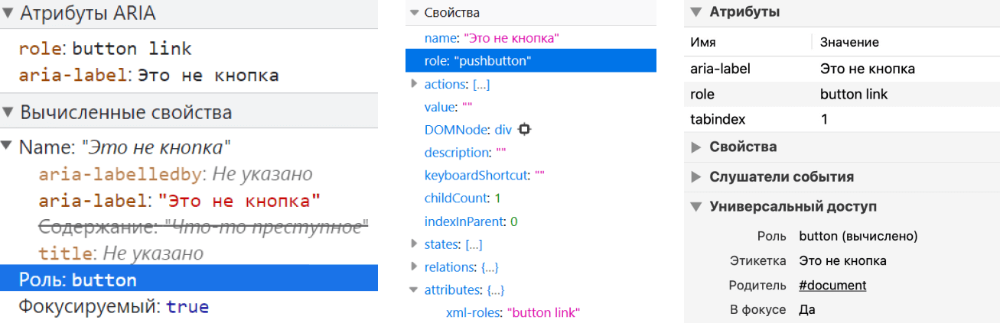
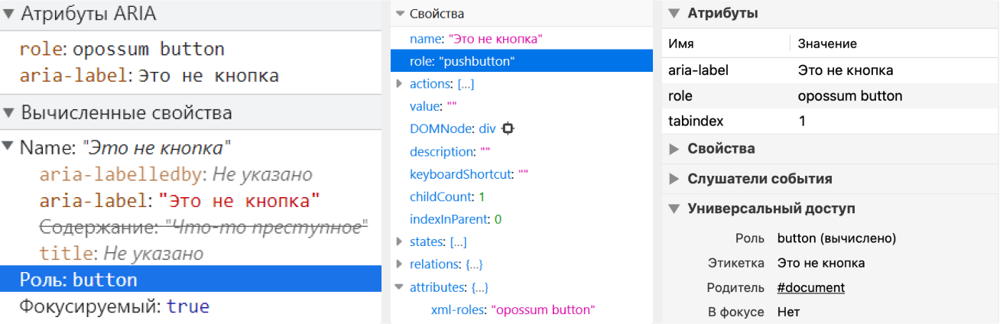
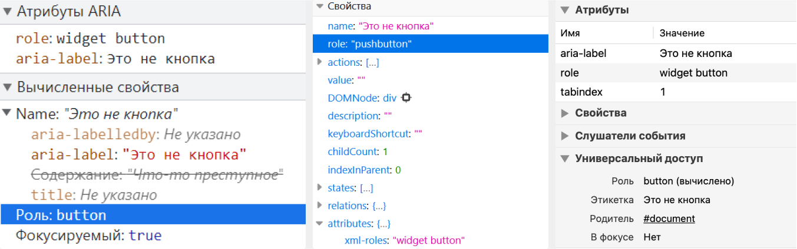
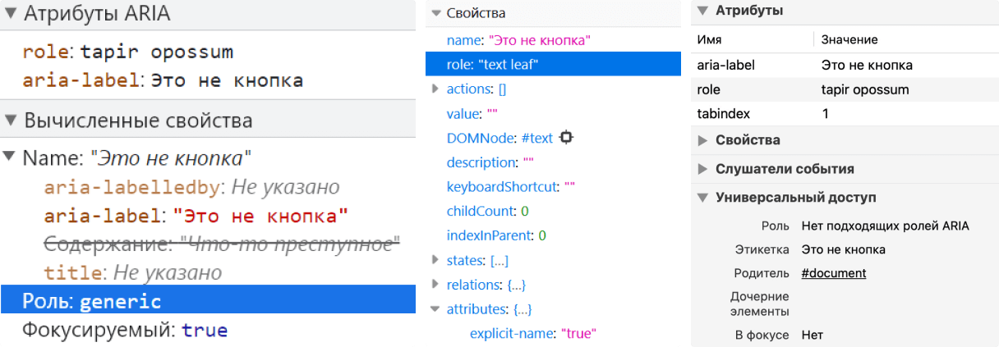

role с несколькими значениями
- ARIA
Недавно случайно узнала, что ARIA-атрибут role может содержать больше одного значения. И это очень неожиданно, по крайней мере для меня.
Этот пост написала из исследовательского интереса, так что в нём нет большого количества полезных практических советов. Что-то даже лучше не применять на практике.
Небольшая справка о роли элемента
Роль содержит информацию о функциях элемента и как с ним можно взаимодействовать. К примеру, о <button> скринридер объявит, что это кнопка, а также сможет на неё нажать.
У элементов может быть либо встроенная роль, либо явно заданная в атрибуте role.
Есть много категорий и видов ролей, и существуют чёткие правила их явного использования. Например, нельзя менять роли при взаимодействии с элементом или задавать абстрактные (landmark, section, widget и другие). Также есть роли, которые предполагают вложенные элементы. Например, в элемент с role="menu" должен быть вложен как минимум один с menuitem. Однако главное правило — стараться как можно реже явно задавать роли, особенно таким образом переопределять семантику элементов.
Что там в документации
В WAI-ARIA (Web Accessibility Initiative — Accessible Rich Internet Applications), как в самом очевидном источнике о role="", нет примеров с двумя ролями. И про несколько значений у этого атрибута пришлось поискать.
WAI-ARIA
В пункте 7.1. Атрибут роли из WAI-ARIA 1.1 собраны характеристики атрибута роли, которые нужно учитывать в языках реализации (host languages):
- Имя атрибута должно быть
role.- Значение атрибута должно допускать список токенов в качестве значения.
- Появление имени литерала любой конкретной роли в качестве одного из токенов не должно само по себе делать недопустимым значение атрибута в синтаксисе языка реализации.
- Первый литерал имени неабстрактной роли в списке токенов атрибута
roleопределяет роль в соответствии с тем, как User Agent должен обрабатывать элемент. То, как User Agent обрабатывает роли, установлено в Core Accessibility API Mappings 1.1.
В WAI-ARIA 1.2 и 1.3 нужная информация находится в пункте 8.1. Атрибут роли:
- Значение атрибута должно допускать список токенов в качестве значения.
- Появление имени литерала любой конкретной роли в качестве одного из токенов не должно само по себе делать недопустимым значение атрибута в синтаксисе языка реализации.
- Первый литерал имени неабстрактной роли в списке токенов атрибута
roleопределяет роль в соответствии с тем, как User Agent должен обрабатывать элемент. То, как User Agent обрабатывает роли, установлено в Core Accessibility API Mappings 1.2.
Раз WAI-ARIA отсылает нас к другой документации, давайте почитаем теперь её.
Core Accessibility API Mappings
Core Accessibility API Mappings (Core-AAM для краткости) — это спецификация для браузеров и других User Agent. В ней описано, как они должны взаимодействовать с Accessibility API.
В пункте 5.4. Мапинг ролей из Core-AAM 1.1 есть то, что нам нужно:
Традиционно Accessibility API платформы имеют ограниченный набор заранее установленных ролей, которые ожидаются вспомогательными технологиями на этой платформе, и предоставлены могут быть только одна или две роли. Напротив, WAI-ARIA позволяет указывать несколько ролей в виде упорядоченного набора валидных токенов ролей, разделённых пробелами. Дополнительные роли — фолбэк для других ролей, что похоже на концепцию указания нескольких шрифтов на случай, если первый тип шрифта не поддерживается.
В этом пункте собраны и сами правила работы с ролями из WAI-ARIA.
- User Agent должен использовать первый токен в их последовательности в значении атрибута роли, который соответствует имени любой неабстрактной роли из таблицы мапинга ролей… Обратите внимание, что, когда роли из WAI-ARIA перезаписывают семантику языков реализации, то DOM (Document Object Model) не изменяется, только дерево доступности.
- User Agent не должен мапировать роли, которые определены в спецификации WAI-ARIA как «абстрактные», с помощью стандартного механизма ролей Accessibility API.
В Core-AAM 1.2 найдёте почти то же самое, но с большим количеством деталей про поддержку ролей разными Accessibility API.
HTML
Давным-давно в HTML-спецификации был пункт 3.2.7.3.1. ARIA-атрибут роли, который тоже описывал возможность добавлять несколько ролей для элемента:
Для каждого HTML-элемента можно указать ARIA-атрибут
role. Это атрибут роли из ARIA, который определён в спецификации в Section 5.4 Definition of Roles.
Атрибут, если он задан, должен иметь значение, которое выглядит как набор токенов, разделённых пробелами и представляющих различные роли WAI-ARIA, к которым относится элемент.
Роль WAI-ARIA, которая назначена для HTML-элемента, первая неабстрактная роль, найденная в списке значений, сгенерированных, когда атрибутroleразделён пробелами.
Пункта больше нет, но интернет помнит всё.
Перевод с документационного
Какие выводы можно сделать после путешествия по спецификациям?
- В атрибуте
roleможно указывать несколько значений. - Несколько значений перечисляется стандартно через пробел.
- Несколько ролей нужны для фолбэка. Если первая роль не поддерживается или не существует, то применяется вторая и так далее.
- Если это абстрактная роль, то браузер и скринридер её проигнорируют.
Тестируем
Давайте проверим, что будут делать браузеры и скринридеры с двумя значениями в атрибуте role. Поэкспериментируем в Chrome 97, Firefox 96 и Safari 14 с NVDA 2021.2 и десктопным VoiceOver.
Кстати, в старых браузерах и скринридерах это не получится проверить. Они просто игнорируют role="" с несколькими значениями. Имейте это в виду.
Разметка, которую буду тестировать, может напугать. Это проверка работы одного атрибута, так что решила хотя бы раз в жизни использовать запрещённые приёмы 😀 В реальных проектах так лучше никогда не делать. Это ужасный антипаттерн (который можно считать преступлением, ха-ха).
Оба значения существуют
<div
role="button link"
aria-label="Это не кнопка"
tabindex="1"
>
Что-то преступное
</div>- NVDA и Chrome: «Это не кнопка, кнопка».
- NVDA и Firefox: «Кнопка».
- VoiceOver и Safari: «Это не кнопка».
Во всех трёх браузерах aria-label содержит текст «Это не кнопка». В Chrome и Safari <div> c role="button link" получил роль button, в Firefox — pushbutton.

Вывод: когда два значения валидные, то в дерево попадает самое первое.
Одно значение существует, другое нет
<div
role="opossum button"
aria-label="Это не кнопка"
tabindex="1"
>
Что-то преступное
</div>- NVDA и Chrome: «Это не кнопка, кнопка».
- NVDA и Firefox: «Кнопка».
- VoiceOver и Safari: «Это не кнопка».
В Chrome и Safari <div> c role="opossum button" получил роль button, в Firefox — pushbutton. Во всех трёх случаях имя «Это не кнопка» взялось из aria-label.

Вывод: если одно значение невалидное, а второе валидное, то в дерево попадает существующее.
Одно значение абстрактное, другое нет
<div
role="widget button"
aria-label="Это не кнопка"
tabindex="1"
>
Что-то преступное
</div>- NVDA и Chrome: «Это не кнопка, кнопка».
- NVDA и Firefox: «Кнопка».
- VoiceOver и Safari: «Это не кнопка».
В Chrome и Safari <div> c role="widget button" получил неабстрактную роль button, в Firefox — pushbutton. Имя всё такое же — «Это не кнопка».

Вывод: когда есть абстрактная роль, то она игнорируется и применяется неабстрактная.
Обоих значений не существует
<div
role="tapir opossum"
aria-label="Это не кнопка"
tabindex="1"
>
Что-то преступное
</div>- NVDA и Chrome: ничего не объявляет.
- NVDA и Firefox: ничего не объявляет.
- VoiceOver и Safari: «Это не кнопка». Объявляет только содержимое атрибута
aria-label.
В Chrome для <div> c role="tapir opossum" вычислена роль generic, в Firefox — text leaf, а в Safari просто не нашлось подходящей роли.
generic — это встроенная роль <div>. Это значит, что перед нами безымянный элемент-контейнер без семантического значения. А text leaf означает какой-то текстовый контент. Как думаете, что стало с именем элемента? Правильно, оно не изменилось и берётся из aria-label.

Вывод: если оба значения невалидные, то в дерево доступности или попадает встроенная роль элемента, или ничего не вычисляется. Зависит от браузера.
Финальные мысли
Всё это время WAI-ARIA предусматривала возможность задавать для атрибута role больше одного значения, но не особо это афишировала.
Не думаю, что это ужасное упущение в спецификации. Сложно представить, для каких ролей нужны фолбеки в современных браузерах. К тому же, с атрибутом role и так легко запутаться. Когда у тебя есть возможность задать бесконечное количество ролей, то это ещё больше усложняет разметку и может привести к неожиданным ошибкам.
Что почитать
- WAI-ARIA 1.1
- WAI-ARIA 1.2
- WAI-ARIA 1.3
- Core Accessibility API Mappings 1.1
- Core Accessibility API Mappings 1.2
roleattribute has valid value, ACT-Rules Community- Notes on use of multiple ARIA role attribute values, Стив Фолкнер
Тысяча благодарностей Василию Дудину за помощь с редактированием ❤️
Другие статьи
- Консистентная идентификация Предыдущая
- CSS-медиафичи для улучшения доступности Следующая